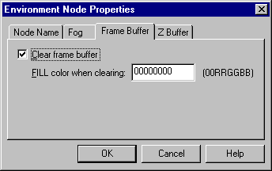

The following tabs are available in the Environment Node Properties dialog box:
Use the [Node name] tab to set the name of the Environment node.

If the node is linked, the node name is displayed in the [Node Name for environment] text box. If it is not linked, then "Unknown" is displayed here. To change the node name, edit the name that is displayed. To specify a new name for a node that is not linked, delete "Unknown" and input the desired name. Conversely, to delete the node name, delete the name that is displayed in the text box. Please note that ASCII characters from "!" (0x21) to "~" (0x7e) can be used for node names. In addition, node names cannot contain spaces, nor can they contain kanji, hiragana or katakana characters.
Use the [Fog] tab to make fog-related settings.

Check the [Use Fog] box to enable the use of fog. If the box is not checked, the function is disabled. This tab can also be used to specify the [fog color], the [fog starting point], and the [fog saturation point].
When fog is enabled, the following fog-related items can be set:
Use the [Frame buffer] tab to clear the frame buffer.

To clear the frame buffer, check the [Clear Frame Buffer] box. When this box is checked, a hexadecimal value in 0x00RRGGBB format for the [FILL color] can be specified, when clearing the frame buffer.
Use the [Z buffer]" tab to clear the Z buffer.

To clear the Z buffer, check the [Clear Z Buffer] box. Upon clearing the Z buffer, the FILL color [FILL color when clearing] can be set as 0x00RRGGBB using the hexidecimal system.